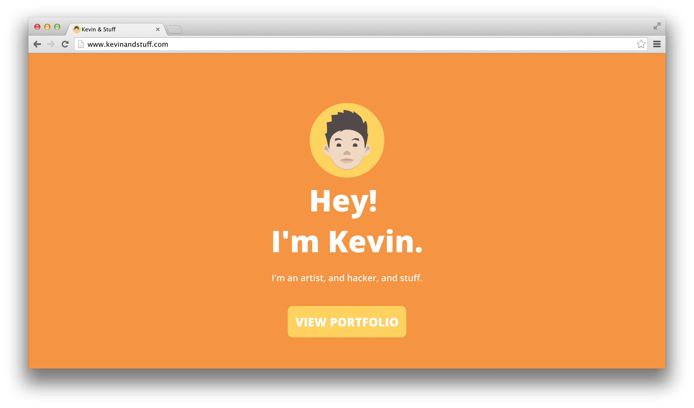
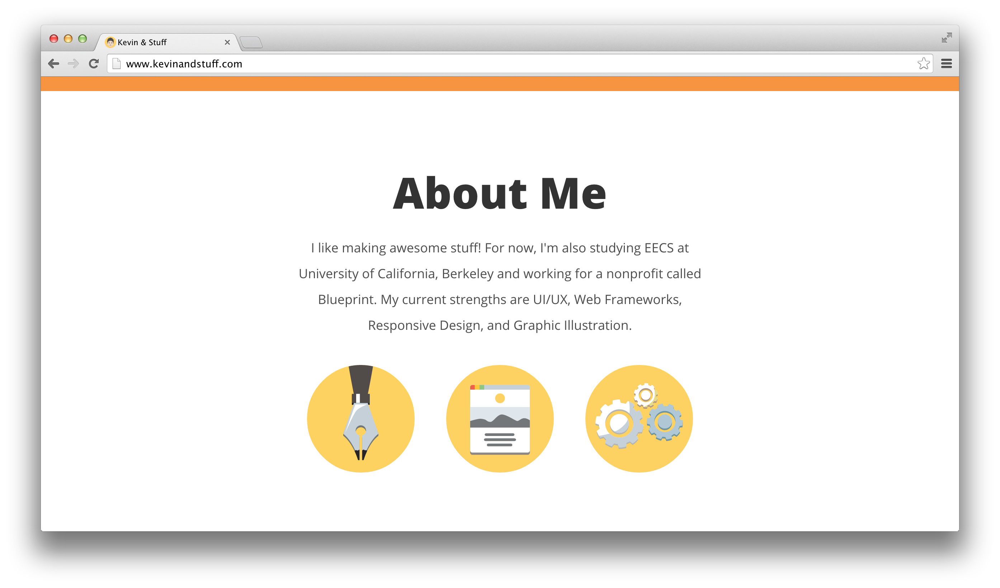
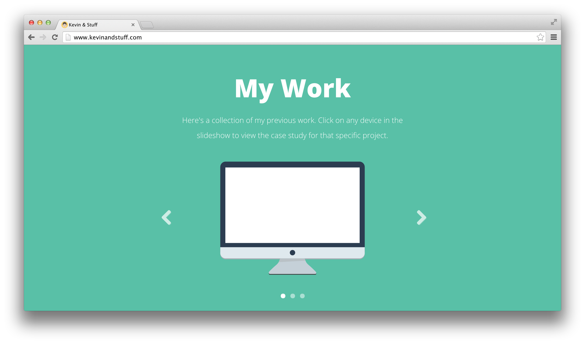
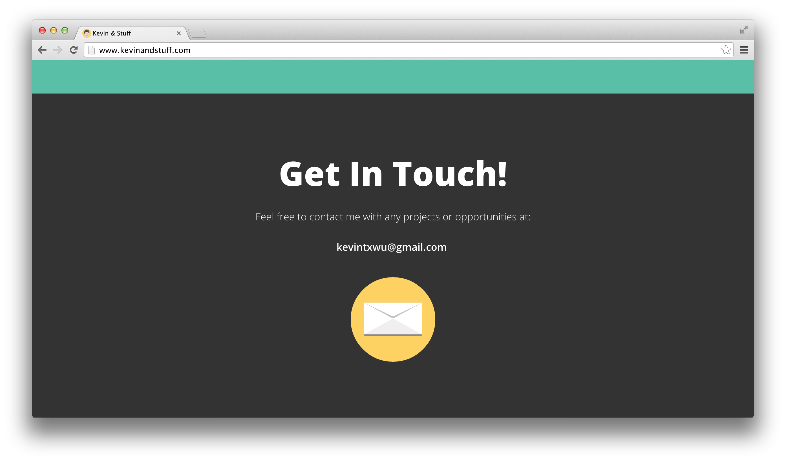

Icon Set
Personal Website
There's not too much to say about this one! I felt like drawing (electronically), and it was very fun. Here's what I ended up with, but in my opinion, the final color scheme was a little weak.
   From this project, I learned a lot about color. Well, kind of. I guess I didn't really succeed because I didn't really like my color scheme in the end, but it was eye-opening. I'll probably stray towards stronger colors in my next couple of designs.